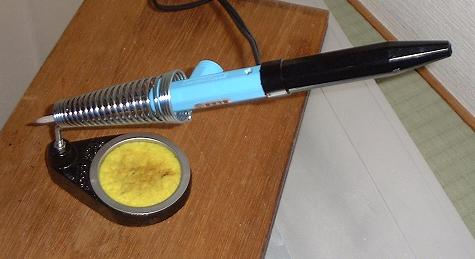

Top
ラジオの製作（その２）
今回は(その１)の反省点や改良点など、今後のための小ネタ集です。
例によって、参考にされる際は自己責任でお願いします。
１．安全性向上策

まずコテ台を購入(上の写真)。基本です…。スポンジにはたっぷりと水を含ませておきます。
それから、作業台の下に敷くものですが、はんだ付け作業をするのに下に新聞紙を敷いていたのは危ないだろうということで、ガス台マット(ガスコンロの下に敷くやつ)を購入しました。
アイロン用の耐熱シートも考えたのですが、価格が安いのと、用途を考えるとこれが一番近いだろうということで。
２．電灯線アンテナ
ラジオの電波を受信するのに使うアンテナには、「電灯線アンテナ」というものもあります。
これは各家庭への電灯線をアンテナに見立てて、そこから電波を受けようというものです。
とりあえず、前回作ったラジオのアンテナ線でこれをためしてみます。
あの時はまるで役に立たなかったスライドスイッチ側のアンテナ線ですが、今回は意味があるはずです。
素朴な発想としては、アンテナ端子からつないだ電線をコンセントの片側の穴に突っ込むだけでいいような気がするかもしれませんが、それでは感電の危険があります。
これをもっと安全にするには、耐圧の高いコンデンサをはさんで高周波成分だけを通すようにするという方法があるようです。
この他に、威力は多少落ちるでしょうが、さらにもう少し安全なやり方として、電源用コードに電線を巻きつける方法があります。
今回ためしたのはこちらの方です(下の写真)。
ここではエナメル線を１００回くらい巻きつけてみました。
これでもけっこうアンテナとして機能するみたいです。
窓から遠い場所など、バーアンテナであまり受信できないときに威力を発揮してくれました。
コンデンサをはさむ方もいずれ試してみたいと思います。
３．フォーンプラグ
普通、クリスタルイヤホンはプラグ付きのものを使いまわすようです。
というわけで今後のためにプラグについて少しだけ勉強しました:
フォーンプラグについてのメモ
次回は上記の電灯線アンテナを使ったトランジスタ検波一石ラジオに挑戦する予定です。
実はもう増幅器部分はほとんど出来ているので、そのうち完成させられると思います。
２００７年５月
トップページ